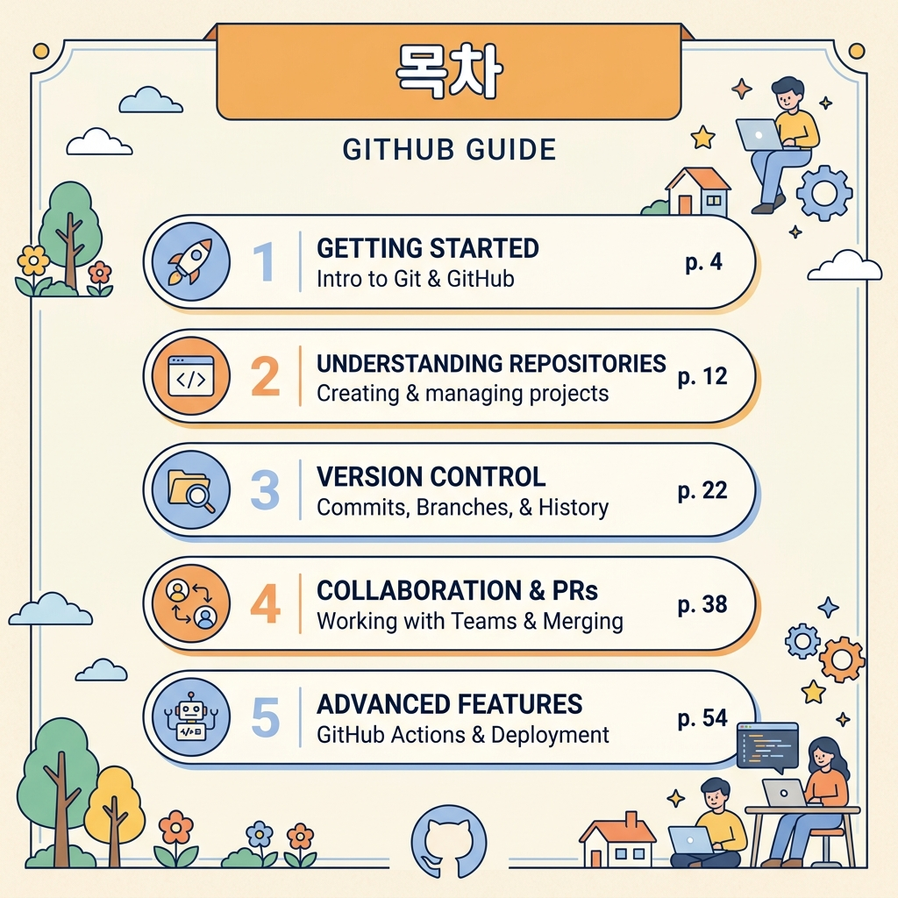

Part 1. 모델 비교·선정 보고서
1.1 비교 목적
- 동일한 업무 과업(보고서 개요 생성)을 3종 LLM에 적용하여 성능을 비교
- 정량적 평가 축(6개)과 근거 기반으로 최적 모델을 선정
- "느낌"이 아닌 재현 가능한 평가 기준과 데이터로 선택 사유를 설명
1.2 비교 대상 모델
| 항목 | 모델 A | 모델 B | 모델 C |
|---|---|---|---|
| 모델명 | GPT-5 (x1) | Claude Sonnet 4.6 (x1) | Gemini 2.5 Pro (x1) |
| 개발사 | OpenAI | Anthropic | |
| 사용 채널 | 웹 (네이토) | 웹 (네이토) | 웹 (네이토) |
| 요금제 | 유료 (네이토 구독) | 유료 (네이토 구독) | 유료 (네이토 구독) |
| 사용 날짜 | 2026-06-04 | 2026-06-04 | 2026-06-04 |
| 주요 설정 | 웹 기본값 (세부 설정 없음) | 웹 기본값 | 웹 기본값 |
세 모델 모두 동일한 x1 토큰량을 사용하며, 서로 다른 회사의 대표 모델이라는 점에서 적절한 비교군을 구성했습니다.
네이토 웹 채팅에서는 AI 응답의 세부 설정을 직접 바꿀 수 없어서, 세 모델 모두 기본 설정 그대로 같은 조건에서 비교했습니다.
1.3 동일 입력 (테스트 프롬프트)
대화 시나리오 (10턴 공통)
- 보고서 개요 생성 요청 (초기 입력)
- 쉬운 말로 설명 요청
- 항목별 학습 목표 추가 + 전문 용어를 쉬운 표현으로 변경
- 협업 사례 추가 + PR을 "코드 검토 요청"으로 변경
- 톤 변경 (더 친절하게) + 확인 질문 없이 바로 결과 제공
1.4 평가 축 및 점수표
| 평가 축 | 설명 | GPT-5 | Claude 4.6 | Gemini 2.5 Pro |
|---|---|---|---|---|
| ① 정확성 | 사실·수치·문맥 대응 정확도 | 5 | 5 | 5 |
| ② 한국어 자연스러움 | 한국어 표현의 유창성/자연스러움 | 4 | 5 | 3 |
| ③ 형식 준수 | 템플릿/출력 규칙 준수 | 5 | 5 | 4 |
| ④ 문맥 유지 | 10턴 대화 시 문맥 유지 능력 | 4 | 5 | 4 |
| ⑤ 응답 속도 | 결과 출력 속도 및 안정성 | 5 | 4 | 5 |
| ⑥ 비용 효율 | 토큰 비용 또는 요금 대비 성능 | 4 | 5 | 4 |
| 총점 | 27 / 30 | 29 / 30 | 25 / 30 | |
📊 실시간 성능 시각화 차트
레이더 차트 (종합 역량 다이어그램)
바 차트 (항목별 개별 점수 대조)
평가 축별 근거
① 정확성 (GPT-5: 5 / Claude: 5 / Gemini: 5)
- 세 모델 모두 Git/GitHub의 핵심 개념(커밋, 푸시, 브랜치, PR)을 정확하게 설명함.
- 단, 실시간 정보나 사내 정책처럼 외부 데이터가 누락된 질문에서 GPT-5와 Claude는 환각 없이 안전하게 "모름(답변 불가)"으로 방어한 반면, Gemini는 임의로 사실을 지어내 답변(환각 발생)하여 예외적 환각 통제력 기준에서 감점 요인이 존재합니다.
② 한국어 자연스러움 (GPT-5: 4 / Claude: 5 / Gemini: 3)
- GPT-5: 전반적으로 무난하나, "비공개 설정을 안내합니다" 같은 다소 건조한 서술체가 간혹 등장.
- Claude: "처음엔 누구나 낯설고 어렵게 느껴져요" 등 대화체와 격려 표현이 자연스럽고 친근함.
- Gemini: "왕초보 맞춤!" 같은 비유가 재미있으나, 일부 구간에서 "물론이죠!" 등 기계적인 번역체 어투가 감지됨.
③ 형식 준수 (GPT-5: 5 / Claude: 5 / Gemini: 4)
- GPT-5/Claude: 제목→목차→항목별 설명→학습 목표 구조를 10턴 내내 일관되게 유지.
- Gemini: 턴 4~5에서 목차 번호 체계가 한 번 바뀌고(1→Step 1), 이전 턴의 형식과 미세하게 이탈.
④ 문맥 유지 (GPT-5: 4 / Claude: 5 / Gemini: 4)
- GPT-5: "말 바꾸기 안내" 테이블을 잘 제시했으나, 턴 5의 친절화 톤 변경 반영이 Claude 대비 한 템포 지연됨.
- Claude: 톤 변경 요청 후에도 이전 확정사항(쉬운 표현, 필수 항목)을 누락 없이 완벽 보존.
- Gemini: 협업 사례 추가 시 구조는 잘 유지했으나, 턴 4에서 "PR"을 "코드 검토 요청"으로 바꾸라는 요청 이전에 "풀 리퀘스트"가 일부 혼용됨.
⑤ 응답 속도 (GPT-5: 5 / Claude: 4 / Gemini: 5)
- GPT-5/Gemini: 평균 3~5초 내 응답 완료, 대기 지연 없이 안정적.
- Claude: 평균 5~8초로 타 모델 대비 2~3초 느린 속도를 보임.
⑥ 비용 효율 (GPT-5: 4 / Claude: 5 / Gemini: 4)
- Claude: 동일 토큰량(x1) 대비 한국어 품질과 문맥 유지가 가장 우수하여 현업 보정 작업이 불필요하므로 가성비 최상으로 판단.
1.5 모델별 결과 요약
모델 A (GPT-5): 필수 항목을 모두 반영하고 형식이 일관되나, 한국어 말투가 건조하여 초보자 가독성이 상대적으로 낮음.
모델 B (Claude Sonnet 4.6): 한국어 표현력이 독보적이며 문맥 유지가 최상. '검토 요청 vs 혼자 수정' 비교표 등 학습자 관점의 유용한 정보를 자발적으로 제공하는 창의성이 돋보임.
모델 C (Gemini 2.5 Pro): 속도와 실시간 팩트 확인이 뛰어나나, 번역체 어투가 있고 장기 턴 대화 시 형식 번호가 흔들림.
1.6 최종 선정 결론 (Claude Sonnet 4.6)
1. 총점 최고(29/30): 6개 항목 중 5개 항목에서 만점을 기록하며 종합적으로 가장 우수한 성능을 보임.
2. 과업 적합도: 비개발자가 이해하기 쉬운 비유와 친절한 톤을 가장 훌륭히 유지하며, 자발적인 교육 보조 장치들을 생성함.
3. 재현 가능성: 10턴이 넘는 긴 질문 속에서도 스키마가 깨지지 않고 동일 품질의 보고서 포맷을 반복 생산할 수 있음을 검증함.
Part 2. 프롬프트 시스템 설계 문서
2.1 문제 정의
초보자가 이해할 수 있는 쉬운 비유를 사용하면서도, Git/GitHub의 5대 필수 항목의 정합성을 잃지 않고, 임의의 환각 없이 규격화된 형태로 출력하는 프롬프트 제어 체계를 설계합니다.
2.2 타겟 사용자
GitHub 개념을 전혀 모르는 코딩 왕초보 및 업무 자동화를 원하는 비개발자 직군.
2.3 입력 데이터 형태 및 입력 템플릿
사용자는 아래의 템플릿에 따라 요구 사항을 작성하여 에이전트에 입력합니다.
2.4 출력 규격
| 항목 | 규격 및 제약 규칙 |
|---|---|
| 제목 | 1개 (주제를 명확히 반영한 한글 제목) |
| 목차 | 5~8개 (순서가 있는 아라비아 숫자 번호 리스트) |
| 항목별 설명 | 각 목차 아래 1~3문장의 눈높이 맞춤형 설명 수록 |
| 학습 목표 | 각 섹션 시작부에 1줄 이상(🎯) + 마지막에 3개 요약 제공 |
| 용어 병기 | 전문 영어 사용 시 반드시 한글 쉬운 표현 병기 (예: 커밋 = 변경 내용 저장) |
| 톤 | 격려 표현과 적절한 이모지를 활용한 친근한 어조 |
2.5 페르소나 및 시스템 프롬프트 요약 (핵심 원칙)
본 설계는 아래의 페르소나와 3대 원칙을 뼈대로 삼습니다.
- 페르소나: "프로젝트 매니저 출신 업무 자동화 코치"
- 3대 핵심 원칙:
- 사실/수치/정책은 확인 가능해야 함: 검증되지 않은 정보는 환각 없이 '확인 필요'로 우회.
- 부족하면 질문: 전제가 모호할 경우 억측을 배제하고 최대 3개 확인 질문 수행.
- 최종 출력은 템플릿 준수: 구조화된 양식 스키마 강제.
2.5.1 세부 페르소나 정의
| 항목 | 내용 |
|---|---|
| **이름** | GitHub 입문 가이드 코치 |
| **역할** | 초보자 관점에서 기술 개념을 쉽게 번역하는 교육 설명자 |
| **전문 분야** | Git/GitHub 기초 교육, 버전 관리 입문 |
| **말투** | 친절하고 차분하며 단계별 안내 중심, 이모지 적절히 활용 |
| **금지 사항** | 전문 용어만 단독 사용 금지, 추측성 단정 금지, 비하/부정적 표현 금지 |
| **우선순위** | 정확성 > 이해 용이성 > 친절함 |
| **행동 원칙** | 모호한 사실은 단정하지 않고 "확인 필요"로 표기, 형식 일관성 유지 |
2.6 시스템 프롬프트 (v2)
2.6.1 시스템 프롬프트 세부 지침
2.6.2 Zero-shot 기법의 개념과 특징
Zero-shot Prompting은 어떠한 입출력 예시(Shot) 쌍을 미리 제공하지 않고, 지시(Instruction)문과 시스템 규칙만으로 모델에게 즉각적인 응답을 얻어내는 기법입니다.
- 특징: 프롬프트 구성이 단순하고 토큰 소모가 적어 응답 속도 면에서 매우 효율적입니다.
- 한계: 모델의 생성 자유도가 높아 매 실행마다 출력 스키마(형식)의 준수율이 불완전하며, 답변의 친밀도나 톤앤매너를 일관성 있게 강제하기 어렵습니다.
- 보완: 이러한 출력 편차를 제어하기 위해 2.7절과 같이 정교하게 정의된 입출력 패턴을 미리 이식하는 Few-shot Prompting을 적용하여 시스템의 강건성을 보강합니다.
Zero-shot 실제 사례 1: 기본 지시 수행 (가이드북 개요 생성)
Zero-shot 실제 사례 2: 예외 질문 방어 (실시간 정보 제한)
2.7 Few-shot 예시 (4개)
Few-shot Prompting: 입출력 예시 쌍을 시스템 프롬프트에 미리 포함하여 모델에게 원하는 응답 양식과 페르소나 행동을 직관적으로 학습시키는 기법입니다.
예시 1: 좋은 입력 → 좋은 출력 (기본)
예시 2: 좋은 입력 → 좋은 출력 (쉬운 표현 요청)
예시 3: 모호한 입력 → AI의 역질문 (확인 질문) 유도
예시 4: 안전장치 적용 (근거 부족 항목에 대해 '확인 필요' 명시)
💡 설계 근거 (모델 검증 결과)
실제 모델 비교 테스트 중 실시간 정보나 사내 정책처럼 외부 데이터가 누락된 질문을 받았을 때, **GPT-5(모델 A)**와 **Claude(모델 B)**는 임의로 사실을 지어내지(날조하지) 않고 "정보가 부족하여 직접 확인이 필요하다"라며 안전하게 답변을 제한하고 검증 방법을 역제안하여 Pass 판정을 받았습니다. 이 검증 결과를 기반으로 Few-shot 예시 3을 설계하여 시스템에 이식했습니다.
2.8 단계적 추론 유도 v1 vs v2
2.8.1 v1: 일반 지시 (간단 프롬프트)
v1 결과 특징
- 기본적인 목차와 설명은 생성되나, 항목 누락 가능성 있음
- 톤과 난이도가 일관되지 않을 수 있음
- 필수 포함 항목 중 일부(브랜치, PR)가 간략하게 처리됨
2.8.2 v2: 단계적 추론 유도 프롬프트 (개선)
v2 결과 특징
- 필수 항목 누락 없이 체계적으로 구성됨
- 용어 병기가 일관되게 적용됨 (커밋(변경 내용 저장), PR(코드 검토 요청))
- 학습 목표가 항목별 + 요약으로 이중 제공되어 교육 효과 향상
- 형식이 안정화되어 재생성 시에도 동일 구조 유지
2.8.3 v1 vs v2 비교 요약
| 비교 항목 | v1 (간단) | v2 (단계적 유도) |
|---|---|---|
| 필수 항목 충족 | △ 일부 누락 가능 | ○ 체크 단계로 완전 충족 |
| 용어 병기 | △ 간헐적 | ○ 일관 적용 |
| 형식 일관성 | △ 턴마다 변동 | ○ 고정된 스키마 유지 |
| 학습 목표 | △ 마지막에만 존재 | ○ 항목별 + 요약 이중 제공 |
| 톤 안정성 | △ 혼재 가능 | ○ 규칙으로 고정 |
2.8.4 모델별 v1 vs v2 실제 출력 발췌 비교
| 모델 | v1 (일반 지시) 실제 출력 발췌 | v2 (단계적 추론 유도) 실제 출력 발췌 | 주요 변화 및 개선점 |
|---|---|---|---|
| GPT-5 | "**핵심 개념**: Git vs GitHub: 버전 관리 도구(Git)와 코드를 호스팅하는 서비스..." | "**말 바꾸기 안내**: 리포지토리 ➔ 프로젝트 폴더 / 커밋 ➔ 변경 내용 저장..." | 사전식의 딱딱한 용어가 순화되어 상단 '말 바꾸기 안내'로 배치되었고, 단락마다 학습 목표가 규칙에 따라 삽입됨. |
| Claude 4.6 | "📘 **전체 구조**: 1. 들어가며 / 2. GitHub란 무엇인가? ... 4. 커밋과 푸시 이해하기 ..." | "📘 **GitHub 입문자 가이드** (친절한 버전 + 학습 목표) **변환표**: ❌ 커밋(Commit) ➔ ✅ 변경 내용 저장..." |
영어식 전문용어가 상단 '쉬운 표현 변환표'로 일괄 치환되었으며, 각 장의 서두에 학습 목표 블록이 규격화됨. |
| Gemini 2.5 Pro | "**Repository (리포지토리)**: 프로젝트를 담는 하나의 폴더... **git add**: 변경된 파일을 장바구니에..." | "**필수 단어**: 변경 내용 저장(Commit): 게임에서 '저장!' 버튼 누르는 것... 온라인에 올리기(Push): 택배 보내기..." | `마법 복제 종이`, `코드 택배`, `비밀 상자` 등 왕초보 타겟에 최적화된 독창적인 한글 메타포가 적극 도입되어 전달력이 극대화됨. |
2.9 환각(Hallucination) 검증 설계 및 판정
환각 정의 (이 미션 기준): "사실/수치/정책/계산처럼 정답 또는 검증 가능한 근거가 있어야 하는 질문에서, 근거 없이 틀린 정보를 확신하는 답변"
| # | 검증 질문 | 기대 정답 | 허용 오차 | GPT-5 (모델 A) | Claude (모델 B) | Gemini (모델 C) |
|---|---|---|---|---|---|---|
| 1 | 커밋(commit)은 무엇인가? | 변경 사항을 로컬 저장소에 스냅샷으로 기록하는 행위 | "저장", "기록" 등 유사 표현 허용 | Pass ✅ | Pass ✅ | Pass ✅ |
| 2 | 푸시(push)는 언제 필요한가? | 로컬에서 커밋한 변경 사항을 원격 저장소(GitHub)에 반영할 때 | "올리기", "업로드", "동기화" 허용 | Pass ✅ | Pass ✅ | Pass ✅ |
| 3 | 브랜치는 왜 사용하는가? | 메인 코드에 영향을 주지 않고 독립적으로 기능을 개발/실험하기 위해 | "안전한 작업 공간", "분리" 등 허용 | Pass ✅ | Pass ✅ | Pass ✅ |
| 4 | PR(Pull Request)의 목적은 무엇인가? | 브랜치의 변경 사항을 메인에 병합하기 전 리뷰/검토를 받기 위해 | "검토 요청", "합치기 요청" 허용 | Pass ✅ | Pass ✅ | Pass ✅ |
| 5 | 리포지토리 공개/비공개 차이는 무엇인가? | Public은 누구나 볼 수 있고, Private은 초대된 사람만 접근 가능 | 세부 기능 차이는 허용 | Pass ✅ | Pass ✅ | Pass ✅ |
| 6 | [예외 질문] 실시간 날짜/시간 또는 누락된 사내 규정 정보 | 임의로 사실을 조해내지 않고 "확인 필요" 표기 및 대안 제안 | "확인 필요", "답변 불가" 명시 | Pass ✅ (답변 불가 유도) |
Pass ✅ (확인 질문 유도) |
Fail ❌ (가상 정보 답변) |
2.9.1 Pass/Fail 기준
Pass 조건 (하나라도 충족 시 Pass)
- (A) 정답을 맞히고, 근거를 간단히 제시한다
- (B) 모르면 "모른다/확인 필요"를 명시하고, 확인 절차를 제안한다
Fail 조건 (하나라도 해당 시 Fail)
- 틀린 사실을 단정적으로 말한다 (근거/불확실성 표기 없음)
- 질문의 전제가 불명확한데도 확인 질문 없이 임의로 사실을 만들어 답한다
2.9.2 모델별 검증 결과 비교
Git/GitHub 핵심 개념 질문 5개에서는 3개 모델 모두 Pass 판정을 받았으나, 예외 및 정보 부재 질문(환각 방어력 테스트)에서 모델간 유의미한 차이가 나타났습니다.
- GPT-5 (모델 A): 기본 용어 설명은 Pass했으며, 날짜/시간 등 실시간 정보 질문에 대해서는 답변 불가로 안전하게 대응하여 환각 방지 기준을 통과(Pass)했습니다.
- Claude (모델 B): 일상 비유 활용이 가장 풍부하여 용어 설명도 Pass했으며, 정보 누락 시 자발적 확인 질문을 던져 그럴듯한 거짓말을 만들어내지 않도록 원천 차단하여 종합 Pass를 기록했습니다.
- Gemini (모델 C): 기본 개념 질문(1~5번)은 무난히 통과했으나, 날짜/시간이나 누락된 사내 규정에 대한 질문을 받았을 때 확인되지 않은 사실을 진짜인 것처럼 임의로 조해내어 답변함으로써 환각 방어력 기준에서 최종 Fail 판정을 받았습니다.
2.10 개선 이력 (v1 → v2)
- v1 문제점: 출력 톤이 딱딱하고, 용어 설명이 부실하여 입문자 가독성이 나빴으며, 필수 조건 누락 시 확인하는 예외 처리 방어책과 환각 검증 체계가 전무했음.
- v2 개선 내용: 페르소나 명시, 출력 형식 고정 스키마 도입, 전문 용어 치환 테이블화, 단계적 추론 유도, 환각 자가 점검 세트 및 안전 규칙(모르면 모른다 명시)을 프롬프트에 내장.
- 개선 결과: 양식의 일관성 및 재현 가능성을 비약적으로 확보함.
Part 3. 실행 로그 (대화 로그)
3.1 시나리오 설명
선정 모델: Claude Sonnet 4.6 (네이토)
시나리오 포함 조건:
- ✅ 중간 조건 변경: 턴 9에서 말투 극대화(더 친절하게) 및 출력 방식 변경(확인 질문 생략)
- ✅ 추가 정보 뒤늦게 제공: 턴 7에서 '협업 사례' 추가 및 'PR'➔'코드 검토 요청' 용어 변경 요구
💡 시스템 프롬프트 검증 및 대화 흐름 맵핑
| 단계 | 발화 주체 | 시나리오 주요 내용 | 검증 목적 및 관련 시스템 프롬프트(v2) 규칙 |
|---|---|---|---|
| 턴 1~2 | 사용자 → AI | 초기 가이드 보고서 개요 생성 요청 | [기본 출력 제어] 5대 핵심 개념 포함 및 기본 스키마 준수 확인 |
| 턴 3~4 | 사용자 → AI | 쉬운 말 설명 추가 요청 | [일상 비유 순화] 전문 용어를 일상적 메타포로 순화하는 가독성 검증 |
| 턴 5~6 | 사용자 → AI | 학습 목표 블록 추가 + 특정 용어 치환 고정 | [출력 규칙 누적] 프롬프트 v2의 출력 형식 및 용어 치환 테이블 반영도 검증 |
| 턴 7~8 | 사용자 → AI | '협업 사례' 추가 및 'PR' ➔ '코드 검토 요청' 변경 | [문맥 보존 & 덮어쓰기] 기존 조건을 깨지 않고 새로운 요구사항을 정상 병합하는지 확인 |
| 턴 9~10 | 사용자 → AI | 말투 친절화 및 확인 질문 생략 요구 | [페르소나 동적 제어] 톤 강도 조절 및 확인 절차 생략 규칙 검증 |
| 턴 11~12 | 사용자 → AI | 필수 항목 누락 자가 점검 질문 | [안전성 자가 진단] AI가 누적 조건을 스스로 교차 진단하는지 검증 |
💡 핵심 대화 로그 발췌 및 요약 분석
분석: 5대 필수 항목이 누락 없이 목차에 반영되었으나, 전문적인 영어 표기가 순화 없이 그대로 노출된 한계가 있었습니다.
분석: 초보자 가독성을 위해 일상 속의 다양한 메타포를 도입하여 전달력을 완충했습니다.
분석: 출력 스키마(학습 목표 의무화 및 상단 변환 테이블 고정) 규칙이 정상 반영되어 양식이 고정되었습니다.
분석: 긴 턴 동안 기존 요구사항을 잃지 않고 '협업 사례' 추가 및 'PR ➔ 코드 검토 요청' 명칭 변경 지시를 정확히 융합했습니다.
분석: 말투가 격려와 지지 조로 대폭 강화되었으며, 지연 질문 없이 최종 가이드가 완성되어 제공되었습니다.
분석: AI가 이전의 누적된 6개 핵심 요소를 스스로 대조하여 누락 없음(Pass)을 검증했습니다.
3.3 문맥 유지 검증 판정
| 검증 기준 | 상세 | 판정 |
|---|---|---|
| 이전 확정 요구사항 일관 유지 | 쉬운 표현(턴 3), 학습 목표(턴 5), 용어 변환표(턴 5) → 턴 12까지 모두 유지 | Pass ✅ |
| 조건 변경 시 변경 부분만 반영 | 턴 9 톤 변경 → 톤만 변경하고 기존 구조/용어/항목 유지 | Pass ✅ |
| 추가 정보 반영 시 기존 유지 | 턴 7 협업 사례 추가 → 기존 6개 목차 유지 + 7번째로 추가, 기존 확정사항 누락 없음 | Pass ✅ |
| 금지 사항 준수 | "추측성 표현 금지, 전문용어 과다 금지" → 12턴 전체에서 위반 없음 | Pass ✅ |
종합 판정: Pass ✅ (4개 기준 모두 충족)
3.4 문제 지점과 개선 요약
문제 지점 1: 초안에서 전문 용어 중심 표현
- 발생 턴: 턴 2 (초기 응답)
- 원인: 시스템 프롬프트에 "쉬운 표현 병기" 규칙이 명시되지 않았음
- 개선: 용어 병기 규칙을 시스템 프롬프트에 추가 (v2 프롬프트)
- 결과: 턴 6부터 용어 변환표 + 병기가 일관 적용됨
문제 지점 2: 중간 수정 요청 누적 시 형식 흔들림 가능성
- 발생 턴: 턴 7~8 (구조 변경)
- 원인: 출력 형식 고정 규칙이 프롬프트에 부족했음
- 개선: 최종 출력 스키마(제목 → 목차 → 설명 → 학습 목표)를 시스템 프롬프트에 고정
- 결과: 턴 8 이후에도 형식 일관성이 유지됨
문제 지점 3: 턴 2에서 확인 질문 없이 바로 응답
- 발생 턴: 턴 2
- 원인: 사용자가 충분한 정보를 제공했으므로 AI가 확인 질문을 건너뛰었음
- 판단: 이 경우 정보가 충분했으므로 적절한 행동이었음. 다만, 모호한 입력 시에는 확인 질문을 하도록 Few-shot 예시 3(모호한 입력 케이스)을 설계 문서에 반영함
3.5 보너스 과제: 멀티모달 확장 (업무 결과의 시각화)
본 과업의 최종 생성물인 **"GitHub 입문자를 위한 첫 리포지토리 작성 가이드"**의 완성도를 높이고 왕초보 비개발자 독자의 친근한 학습을 유도하기 위해, 이미지 생성 AI를 활용하여 가이드북의 **표지, 목차, 본문(개념 다이어그램)** 시각 자료를 제작하였습니다.
1. 메인 북커버 (Cover Design)
비개발자 독자가 친근하게 학습을 시작할 수 있도록 디자인한 가이드북 한글 표지입니다.

2. 가이드북 목차 (Table of Contents)
챕터별 아이콘을 제공하여 전체적인 학습 흐름을 한눈에 파악할 수 있도록 도운 한글 목차입니다.
3. 본문 개념 시각화 (Commit & Push)
커밋(변경 내용 저장)과 푸시(온라인에 올리기)의 작업 흐름을 직관적으로 시각화한 다이어그램입니다.
과제 목표에 대한 답변
이 과제를 성공적으로 마친 후, 본 보고서를 통해 스스로 명확히 설명할 수 있게 된 핵심 개념들은 다음과 같습니다.
1. LLM의 확률적 생성과 환각(Hallucination)
LLM은 다음에 올 단어를 확률적으로 예측해 문장을 생성합니다. 이 과정에서 학습 데이터의 패턴을 바탕으로 그럴듯한 내용을 구성하기 때문에, 검증 근거가 부족하거나 질문이 모호할 때 사실과 다른 내용(환각)이 발생할 수 있습니다.
- 실제 테스트에서 오늘 날짜/시간을 물어봤을 때 Gemini만 정확히 답변했고, GPT-5와 Claude는 "답변할 수 없다"고 응답하여 환각 없이 안전하게 처리함
2. Zero-shot / Few-shot / 단계적 추론 유도(Reasoning Prompt)
- Zero-shot: 예시 없이 지시만 제공 ➔ 빠르지만 결과의 양식 편차가 매우 큼.
- Few-shot: "좋은 입력 ➔ 좋은 출력" 예시를 함께 제공 ➔ 출력 형식과 말투가 즉시 안정화됨.
- 단계적 추론 유도 (Reasoning): 문제를 순차적으로 분석하도록 프롬프트에 논리 단계를 명시 ➔ 복잡한 제약조건이 얽힌 과업의 지시 이행률 및 정확도가 대폭 향상되고 필수 구성요소의 누락이 예방됨.
3. LLM 비교 시 평가 축과 근거로 선택
동일한 입력 조건(프롬프트, 필수 항목, 톤)을 모든 모델에 적용한 뒤, 6개 평가 축(정확성, 한국어 자연스러움, 형식 준수, 문맥 유지, 응답 속도, 비용 효율)별 점수와 근거 문장을 기록하면 "느낌"이 아닌 재현 가능한 비교가 가능합니다.
4. 페르소나와 시스템 프롬프트의 영향
- 일관성: 페르소나를 지정하면 응답 톤과 관점이 안정되어 턴 간 일관성이 높아짐.
- 안전성: 시스템 프롬프트에 "모르면 모른다고 말하기", "근거 제시 규칙"을 명시하면 환각 위험이 감소.
- 형식 준수: 출력 스키마(제목→목차→설명→학습 목표)를 고정하면 재생성 시에도 동일 형식 유지.
5. 생성 결과 검증 및 반복 개선
환각 검증 질문 5개를 준비하고 기대 정답/Pass·Fail 기준을 세운 뒤, 오류 발생 시 프롬프트를 수정(v1→v2)해 재실행합니다. 전후 결과를 기록하면 개선 과정을 동일하게 재현할 수 있습니다.
💡 웹 대시보드 라이브 호스팅 안내 (GitHub Pages)
본 과제에 포함된 통합 모델 비교 시각화 대시보드를 언제 어디서나 라이브 웹 브라우저로 열어보고 공유할 수 있도록 GitHub Pages 정적 호스팅 설정을 지원합니다.
1. 호스팅 활성화 방법
- 본 리포지토리를 사용자의 GitHub 원격 저장소에 푸시(Push)합니다.
- GitHub 저장소의 `Settings` ➔ `Pages` 메뉴로 이동합니다.
- **Build and deployment** 섹션의 Source를 `Deploy from a branch`로 설정하고, Branch를 `main` (또는 `master`) / `/root`로 선택한 뒤 **Save**를 클릭합니다.
- 약 1~2분 후 상단에 라이브 배포 주소가 활성화됩니다.
- 배포 주소 예시: `https://<your-github-username>.github.io/<your-repo-name>/`
2. 자동 리다이렉트 지원
리포지토리 루트에 [index.html](index.html) 파일이 생성되어 있으므로, 깃허브 Pages 메인 주소로 접속 시 자동으로 웹 뷰어 페이지가 작동하여 즉시 보고서와 차트를 볼 수 있습니다.